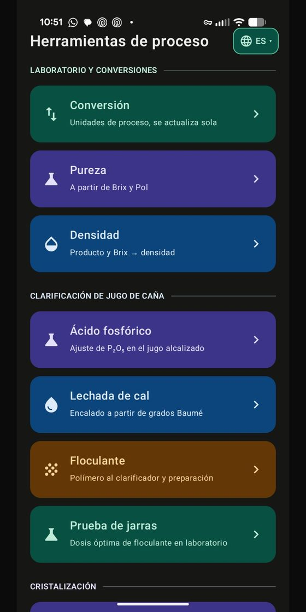
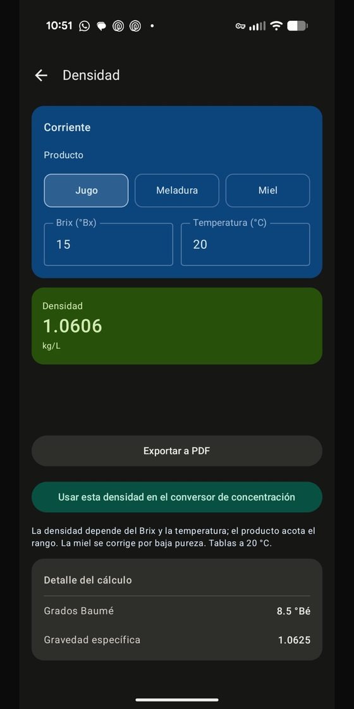
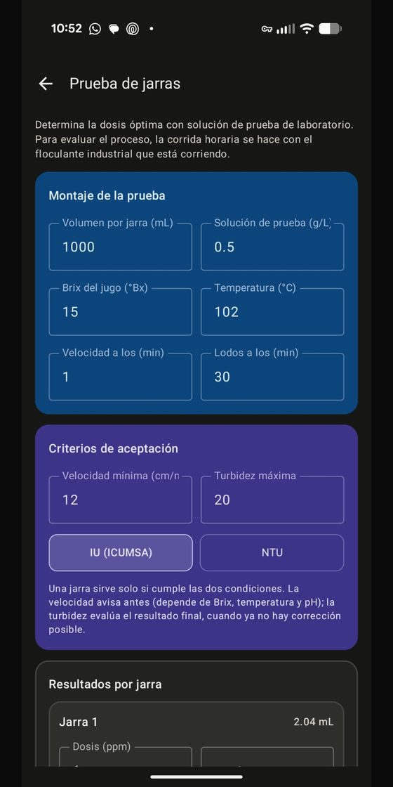
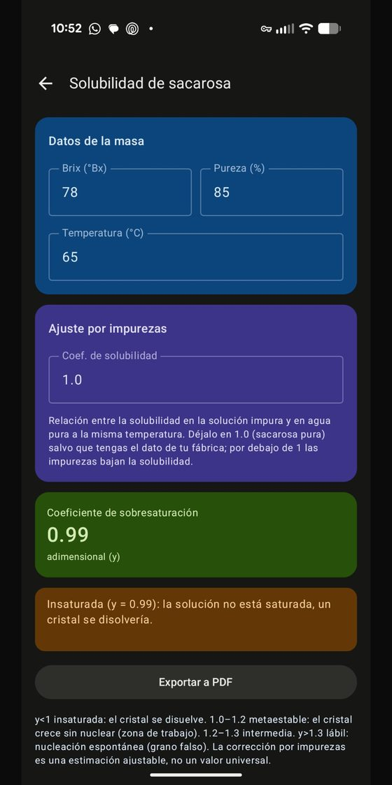
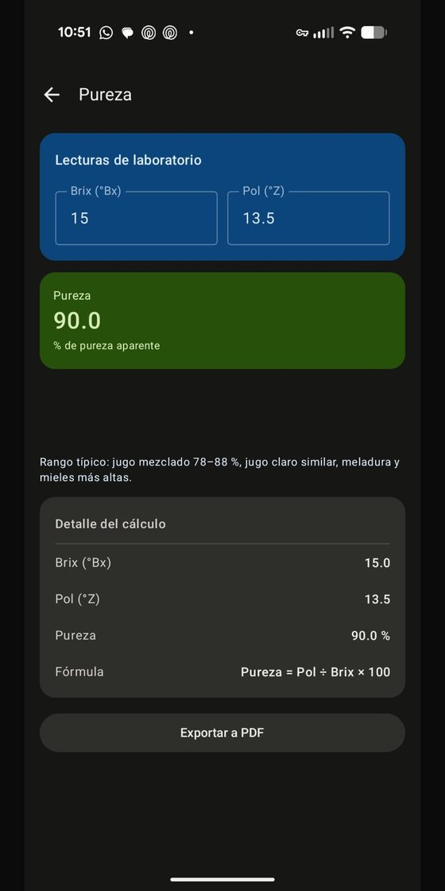

O SugarPlantCalc reúne Brix, Pol, pureza, extração, balanço de massa, clarificação e evaporação em um só app. Resultados de planta em segundos, mesmo sem sinal.
Calculadoras
Offline na planta
Idiomas

Menos planilhas, menos erros, decisões mais rápidas onde o processo acontece.
Resultados em segundos. Deixe para trás fórmulas manuais e planilhas lentas.
Fórmulas validadas do processo açucareiro. Menos retrabalho e decisões mais seguras.
Funciona sem internet nem sinal, bem onde está a moenda, a casa de caldeiras ou o laboratório.
Do laboratório à fábrica: Brix, Pol, balanço e mais, sem trocar de ferramenta.
Cada módulo resolve uma etapa real do processo, com entradas claras e resultados prontos para relatar.
Pureza de caldos, xaropes e melaços com correção por temperatura e hidrômetro.
Eficiência de extração em ternos de moendas ou difusores, embebição % cana e rendimento.
Recuperação teórica (SJM), retenção de sacarose e perdas indeterminadas de fábrica.
Dosagem de cal/floculante, condensados, vapor de escape e balanço de água evaporada.
Ton/h, GPM, °Bx, t/m³, libras de vapor e outras unidades-chave do setor sucroalcooleiro.
Salve as corridas críticas para comparar turnos de moagem e consultar dados históricos.
Por que a equipe de processo prefere um app dedicado a uma planilha improvisada.
Alto contraste, legível sob o sol e otimizada para uso com uma só mão.




Engenheiro de Processos · Criador do SugarPlantCalc
Engenheiro de processos especializado na otimização de usinas de açúcar. Criei o SugarPlantCalc para eliminar atrasos e erros de cálculo manual durante a operação diária.
O objetivo: colocar nas mãos do laboratório, supervisores e engenheiros uma suíte técnica rápida, precisa e robusta que funcione sem conexão.
Escreva-meAs perguntas mais comuns da equipe de processo sobre o SugarPlantCalc.
Não. Todos os cálculos funcionam 100% offline, ideal para o trabalho na planta sem sinal.
Está em fase final de testes. Em breve estará disponível no Google Play.
Para engenheiros de processos, equipe de laboratório, supervisores e operadores de usinas de açúcar.
Brix, Pol, pureza, extração, embebição, balanço de massa, recuperação, clarificação, evaporação e conversão de unidades.
Em telefones e tablets Android.
Informaremos as condições no lançamento. Assine a lista para saber primeiro.
Quer propor uma melhoria, relatar um cálculo ou consultar sobre otimização de processos na sua usina? Escreva-me diretamente.
sugarfactory1995@gmail.com